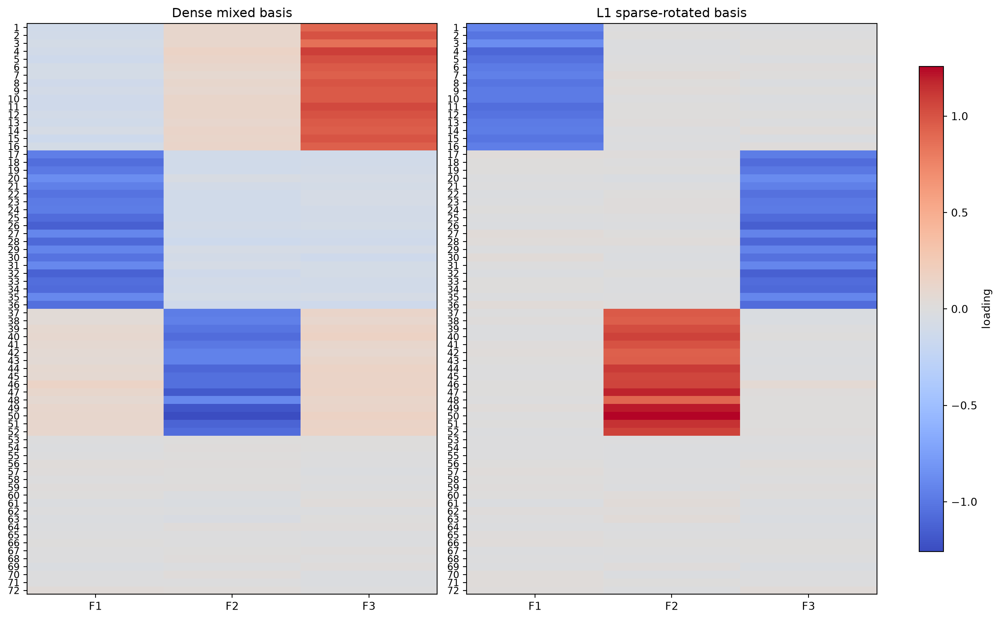
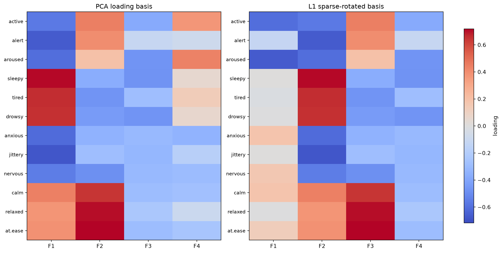
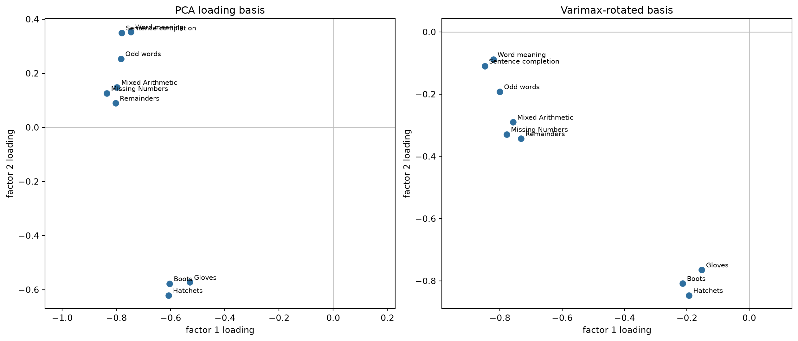

from pathlib import Path
import matplotlib.pyplot as plt
import numpy as np
import polars as pl
import crabbymetrics as cm
np.set_printoptions(precision=4, suppress=True)
DATA_DIR = Path("docs/data")
if not DATA_DIR.exists():
DATA_DIR = Path("../data")Sparse Factor Rotations
This page summarizes the sparse-rotation primitives in crabbymetrics. They are deliberately small functions:
l1_sparse_rotation(loadings, ...)searches for local, sparse directions inside a loading space by minimizing an entrywise L1 criterion.varimax_rotation(loadings, normalize=False)rotates a loading matrix toward high-contrast columns.count_small_loadings,local_factor_diagnostic,inverse_participation_ratio, andcumulative_participationsummarize sparsity and localization.
The workflow is PCA or SVD first, rotation second, interpretation last. A rotation preserves the fitted subspace and chooses a basis inside that subspace. Sparse L1 rotation comes first here because it is the sharper tool when a few units or variables should carry each factor.
1 Imports
2 Helpers
def read_numeric_data(path, columns=None):
frame = pl.read_csv(path, null_values=["", "NA", "NaN"])
candidate_columns = columns or [name for name in frame.columns if name != "rownames"]
numeric = frame.select(
pl.col(name).cast(pl.Float64, strict=False).alias(name)
for name in candidate_columns
)
if columns is None:
columns = [
name
for name in numeric.columns
if numeric.select(pl.col(name).is_not_null().any()).item()
]
return columns, numeric.select(columns).drop_nulls().to_numpy()
def standardize(x):
return (x - x.mean(axis=0, keepdims=True)) / x.std(axis=0, ddof=1, keepdims=True)
def pca_loadings_from_data(x, n_factors):
z = standardize(x)
_, singular_values, vt = np.linalg.svd(z, full_matrices=False)
return vt[:n_factors].T * singular_values[:n_factors] / np.sqrt(z.shape[0] - 1)
def loadings_from_correlation(corr, n_factors):
eigenvalues, eigenvectors = np.linalg.eigh(corr)
order = np.argsort(eigenvalues)[::-1]
eigenvalues = eigenvalues[order]
eigenvectors = eigenvectors[:, order]
return eigenvectors[:, :n_factors] * np.sqrt(eigenvalues[:n_factors])
def normalized_columns(x):
return x / np.linalg.norm(x, axis=0, keepdims=True)
def max_abs_column_matches(estimate, truth):
score = np.abs(normalized_columns(estimate).T @ normalized_columns(truth))
return score.max(axis=1)
def loading_heatmaps(left, right, row_labels, titles, figsize=(13, 6.5)):
fig, axes = plt.subplots(1, 2, figsize=figsize, constrained_layout=True)
limit = max(np.abs(left).max(), np.abs(right).max())
image = None
for ax, values, title in zip(axes, [left, right], titles):
image = ax.imshow(values, cmap="coolwarm", vmin=-limit, vmax=limit, aspect="auto")
ax.set_title(title)
ax.set_xticks(range(values.shape[1]), [f"F{j + 1}" for j in range(values.shape[1])])
ax.set_yticks(range(len(row_labels)), row_labels)
ax.tick_params(axis="y", labelsize=9)
fig.colorbar(image, ax=axes, shrink=0.85, label="loading")
plt.show()3 L1 Sparse Rotation
Let Lambda be a p by r loading matrix. For a unit vector q in the r-dimensional factor space, the rotated loading column is Lambda q. The L1 method searches the sphere for directions with small entrywise absolute mass:
\[ \phi(q) = \|\Lambda q\|_1 = \sum_{i=1}^p |(\Lambda q)_i|, \qquad \|q\|_2 = 1. \]
A low value of phi(q) signals a column with many near-zero loadings and a few active coordinates. The implementation parameterizes the unit sphere, runs Nelder-Mead local search from many random starts, clusters repeated local minima, sorts candidates by small-loading counts and objective values, then assembles a full-rank rotation matrix from the selected directions. Signs and column order carry no interpretation by themselves.
3.1 A Favorable Simulation
This simulation starts from three genuinely sparse loading columns. A random orthogonal matrix hides those columns by mixing them into a dense basis. The L1 rotation sees only the dense basis and tries to recover sparse axes inside the same column space.
rng = np.random.default_rng(2026)
p, n_factors = 72, 3
true_sparse = np.zeros((p, n_factors))
for j, (start, stop) in enumerate([(0, 16), (16, 36), (36, 52)]):
true_sparse[start:stop, j] = rng.normal(1.0, 0.08, size=stop - start)
true_sparse += 0.015 * rng.normal(size=true_sparse.shape)
mixing, _ = np.linalg.qr(rng.normal(size=(n_factors, n_factors)))
dense_basis = true_sparse @ mixing
sim_l1 = cm.l1_sparse_rotation(
dense_basis,
n_starts=300,
seed=8,
max_iter=120,
tol=1e-7,
)
sim_rotated = np.asarray(sim_l1["rotated"])
print("candidate L1 values:", np.asarray(sim_l1["fval"])[:3])
print("small-loading counts:", cm.count_small_loadings(sim_rotated, threshold=0.08))
print("best absolute matches to true sparse columns:", max_abs_column_matches(sim_rotated, true_sparse))candidate L1 values: [16.5688 17.6623 20.9571]
small-loading counts: [56. 56. 52.]
best absolute matches to true sparse columns: [1. 1. 1.]loading_heatmaps(
dense_basis,
sim_rotated,
row_labels=[str(i + 1) for i in range(p)],
titles=("Dense mixed basis", "L1 sparse-rotated basis"),
figsize=(13, 8),
)
The heatmap shows the ideal use case: the input columns are dense because the sparse factors have been mixed, and the rotated columns recover the block-local structure. The printed column-match scores are close to one because the recovered sparse columns align with the generating columns up to sign and order.
3.2 Mood Items From Rdatasets
The small.msq dataset has 200 responses to affect items. The item names suggest local blocks: energetic activation, sleepiness/fatigue, anxiety, and calmness. This gives a compact real-data example where sparse rotation can concentrate columns on interpretable item groups.
msq_items = [
"active",
"alert",
"aroused",
"sleepy",
"tired",
"drowsy",
"anxious",
"jittery",
"nervous",
"calm",
"relaxed",
"at.ease",
]
_, msq = read_numeric_data(DATA_DIR / "small_msq.csv", columns=msq_items)
msq_loadings = pca_loadings_from_data(msq, n_factors=4)
msq_l1 = cm.l1_sparse_rotation(
msq_loadings,
n_starts=400,
seed=11,
max_iter=120,
tol=1e-7,
)
msq_rotated = np.asarray(msq_l1["rotated"])
print("selected candidate L1 values:", np.asarray(msq_l1["fval"])[:4])
print("small-loading counts:", cm.count_small_loadings(msq_rotated, threshold=0.20))selected candidate L1 values: [2.0473 2.0567 2.1011 2.1528]
small-loading counts: [10. 0. 1. 1.]loading_heatmaps(
msq_loadings,
msq_rotated,
row_labels=msq_items,
titles=("PCA loading basis", "L1 sparse-rotated basis"),
)
White and near-white cells in the heatmap mark weak loadings. The PCA basis spreads signal across many mood adjectives; the L1-rotated basis concentrates columns on smaller item groups. This is the visual counterpart to the small-loading counts.
4 Diagnostics
Freyaldenhoven’s local-factor diagnostic counts entries smaller than h_n = 1 / log(n) by default and compares the largest count to a Gaussian reference threshold. You can also pass a fixed threshold when a scale is known.
diag = cm.local_factor_diagnostic(msq_rotated)
print("has local factors:", diag["has_local_factors"])
print("n_small:", np.asarray(diag["n_small"]))
print("gamma_n:", diag["gamma_n"])
print("h_n:", round(float(diag["h_n"]), 4))has local factors: True
n_small: [10. 2. 4. 9.]
gamma_n: 7.0
h_n: 0.4024The VSP-style localization utilities are scale-sensitive summaries of concentration:
orthonormal_example = msq_rotated / np.linalg.norm(msq_rotated, axis=0, keepdims=True)
print("IPR by column:", cm.inverse_participation_ratio(orthonormal_example))
print("cumulative participation:", round(cm.cumulative_participation(orthonormal_example), 6))IPR by column: [0.3862 0.0935 0.1183 0.109 ]
cumulative participation: 1.65625For unit-norm singular vectors, inverse_participation_ratio is sum(x**4). Values closer to zero are diffuse; values of order one indicate localization.
5 Varimax
Varimax also rotates inside the supplied loading space, using a different criterion. For rotated loadings B = Lambda R, with R orthogonal, crabbymetrics maximizes the classic columnwise contrast
\[ \sum_{j=1}^r \left[ \sum_{i=1}^p B_{ij}^4 - \frac{1}{p}\left(\sum_{i=1}^p B_{ij}^2\right)^2 \right]. \]
Large fourth moments reward columns with a few large entries. The subtraction term controls for column scale. The implementation uses the standard SVD update for orthogonal Varimax and optionally applies Kaiser row normalization before the rotation.
5.1 Ability-Test Correlations From Rdatasets
The Harman-Holzinger data are a 9 by 9 correlation matrix of ability tests. The first two principal loading columns span the dominant ability-test space, and Varimax chooses axes that line up more clearly with verbal and arithmetic/spatial-style item groups.
harman_columns, harman_corr = read_numeric_data(DATA_DIR / "harman_holzinger.csv")
harman_loadings = loadings_from_correlation(harman_corr, n_factors=2)
harman_varimax = cm.varimax_rotation(harman_loadings, normalize=False)
harman_rotated = np.asarray(harman_varimax["rotated"])
print("Varimax rotation:")
print(np.asarray(harman_varimax["rotation"]))
print("Varimax objective:", round(float(harman_varimax["objective"]), 6))Varimax rotation:
[[ 0.8528 0.5222]
[-0.5222 0.8528]]
Varimax objective: 1.435356fig, axes = plt.subplots(1, 2, figsize=(13, 5.5), constrained_layout=True)
for ax, values, title in [
(axes[0], harman_loadings, "PCA loading basis"),
(axes[1], harman_rotated, "Varimax-rotated basis"),
]:
ax.axhline(0, color="0.75", linewidth=1)
ax.axvline(0, color="0.75", linewidth=1)
ax.scatter(values[:, 0], values[:, 1], s=45, color="#2f6f9f")
for name, x, y in zip(harman_columns, values[:, 0], values[:, 1]):
ax.annotate(name.replace("_", " "), (x, y), xytext=(5, 3), textcoords="offset points", fontsize=8)
ax.set_title(title)
ax.set_xlabel("factor 1 loading")
ax.set_ylabel("factor 2 loading")
ax.set_aspect("equal", adjustable="datalim")
plt.show()
The scatterplot emphasizes the basis-selection role of Varimax. The factor space stays fixed, while the rotated coordinate axes are easier to name.
6 Practical Notes
Use these routines when the application supplies structure inside a PCA/SVD subspace:
- L1 rotation is natural when meaningful factors should be local or sparse in the loading dimension.
- Varimax is natural when independent latent coordinates should create high-contrast rotated axes.
- Diagnostics give evidence about structure and should be read alongside plots.
For larger factor dimensions, the L1 method can become expensive because it intentionally runs many local searches. Start with a modest n_starts, inspect sol_frequency and fval, then raise n_starts when the candidate set is unstable.